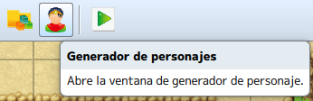

¿Qué sería de un videojuego sin sus antagonistas? Ciertamente, los enemigos tienen casi la misma importancia que el
personaje principal, debido a que la historia también se desarrolla en torno a ellos.
En este tema daremos un vistazo al concepto de enemigos y su importancia en los videojuegos y su papel en el balanceo
del juego, así como también los tipos de enemigos, ya sean enemigos especiales (jefes) y enemigos de entorno (mobs).
Aprenderemos también a incluirlos con RPG Maker y a configurar sus diferentes variaciones para adaptarlos al gameplay.
- Conocer la importancia de los enemigos en un videojuego.
- Aprender a darle un trasfondo narrativo a los enemigos especiales.
- Aprender a balancear la dificultad del juego con estos elementos.
- Aprender a agregar enemigos especiales con RPG Maker.
- Aprender a crear grupos de enemigos con RPG Maker.
- Aprender a configurar los diferentes tipos de enemigos.
- Implementar todo lo aprendido a nuestro proyecto principal.
A lo largo del desarrollo necesitaremos implementar NPCs enemigos con los que solo iniciaremos una batalla cuando interactuemos con ellos, además que, si queremos darle profundidad a nuestro juego, podemos darles un dialogo previo a la batalla y que luego, al ser derrotados, nos den mas información acerca de la historia.
Una vez tengamos diseñado el recinto, entraremos al modo evento y seleccionaremos un recuadro donde queremos que se ejecute el evento y daremos a click derecho nuevo. Ya en la ventana de evento, primero debemos escoger una imagen para el evento, que en este caso será la miniatura del NPC enemigo.

Una vez seleccionada la imagen del evento, vamos a añadirle un texto que nos dirá cuando interactuemos con él. Este texto podrá contener parte de la historia que queremos contar o mostrar una emoción del enemigo para dar un énfasis mayor a la batalla. Para ello añadiremos una nueva línea de evento y seleccionaremos la opción Mostrar mensaje en la pestaña 1.
Terminado el paso anterior, pasaremos a añadir el evento que desatará la batalla, para ellos añadiremos una nueva línea de evento y seleccionaremos la opción Procesar batalla... en la pestaña 3. Dentro elegiremos el enemigo y definiremos si podemos huir o no de la batalla.
Si hemos realizado todos los pasos anteriores adecuadamente, deberíamos tener algo como esto.

Como se puede ver en la imagen, el evento ya esta creado y listo para ser ejecutado.

Si probamos el mapa podemos ver que el evento se ejecuta sin problemas, cuando interactuamos con el enemigo.